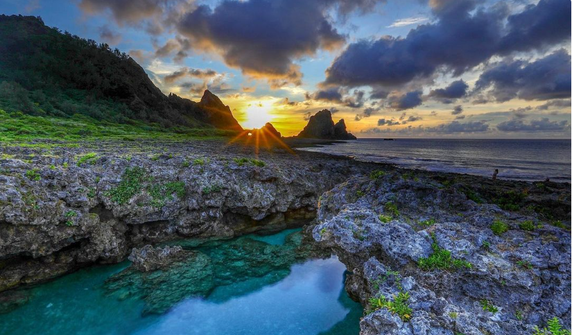
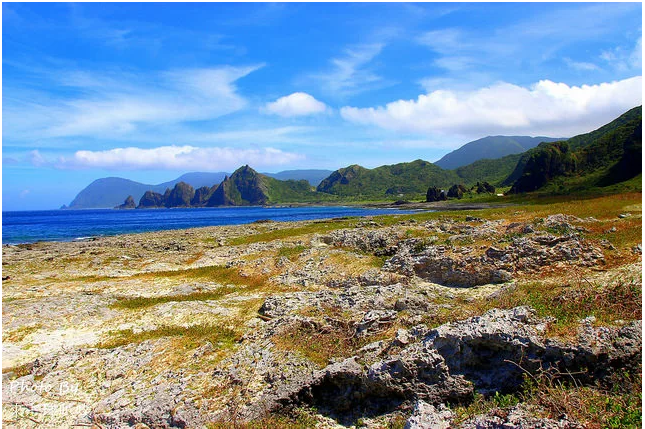
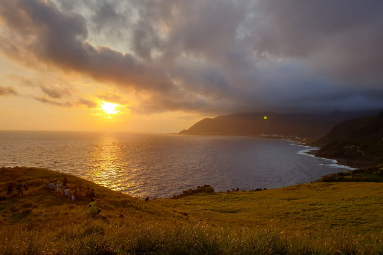
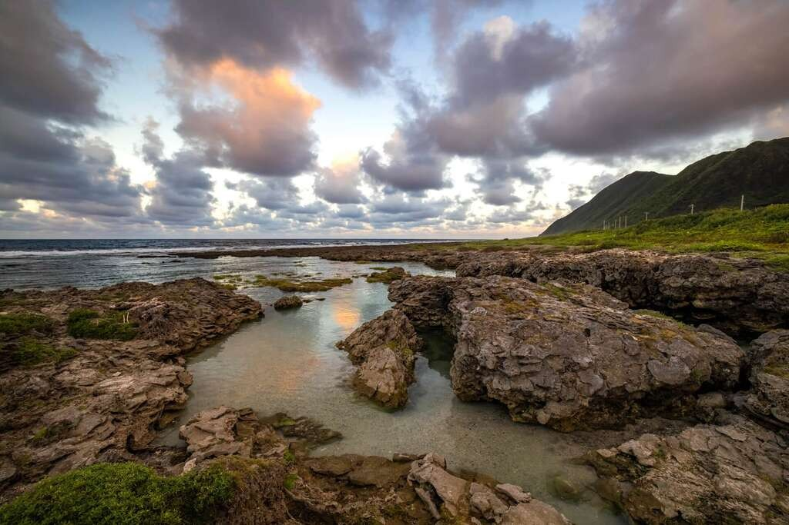
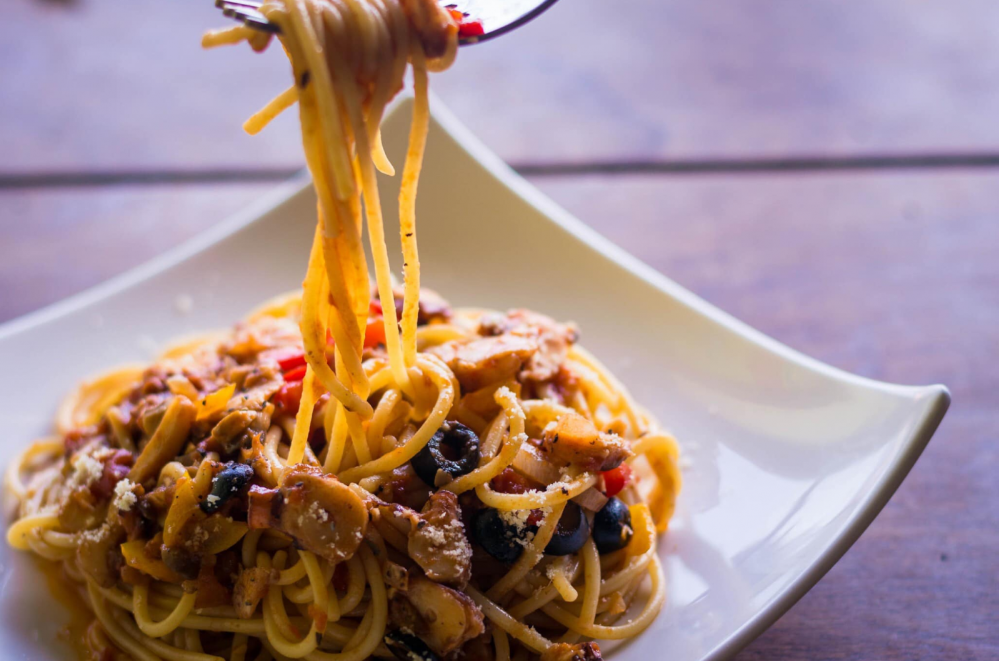
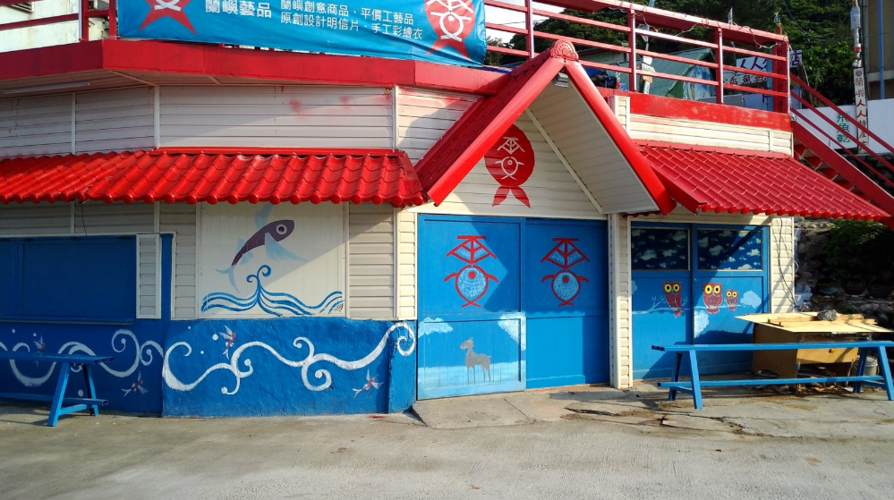
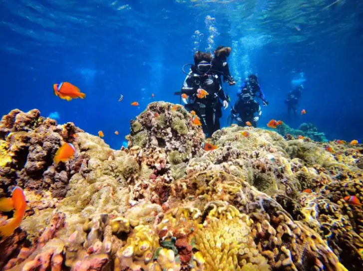
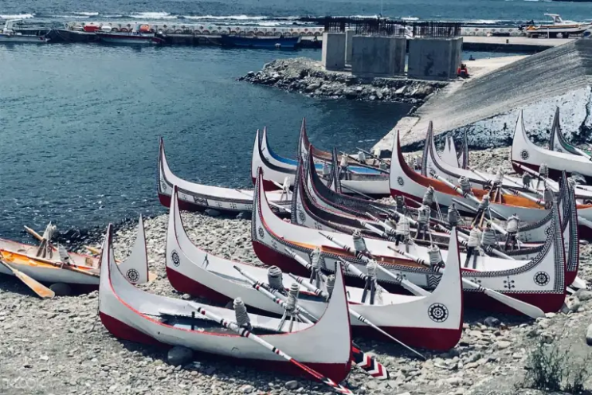
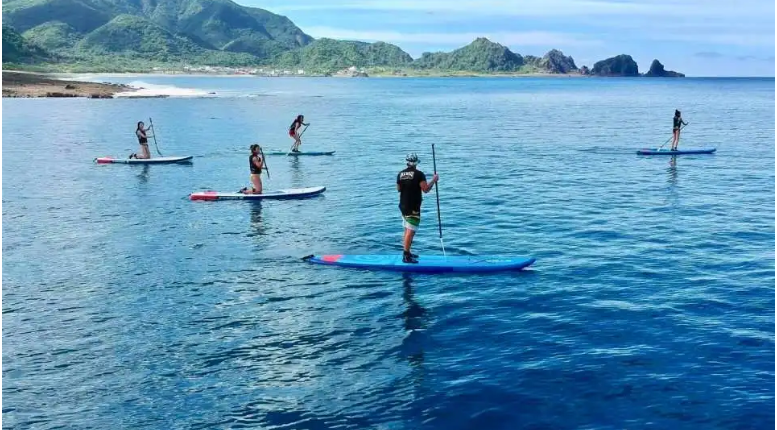

東清秘境--日出
東清秘境--日出
是一流的美，平時也常會看到職業攝影師在此守候，
等待的就是太陽冉冉升起的那刻阿。
黃光乍現搭配美不勝收的自然景觀，浪漫滿分呀！

東清秘境--貝殼砂海灘
東清秘境--貝殼砂海灘
如世外桃源般的夢幻場景，貝殼砂個個晶瑩剔透、宛如珠玉，
經過海浪長期間的沖刷、研磨所形成，所需要的時間非常長，
在數千年都不可能重新堆積而成。
其中含有珊瑚、貝殼碎屑等，其碳酸鈣含量多半達60%以上，
其中砂島更高達98%，稱為國寶，當之無愧
更多資訊

青青草原(早晚)
青青草原(早晚)
為蘭嶼南端最為寬闊的草原，是一處隆起的珊瑚礁台地，
早期原為居民傳統耕作地，後因人口外流不再耕作，
從而生長出大片深綠淺綠相互交錯的大草原，此等自然美景，
漸漸成為遊客觀景和欣賞日落的好去處。
更多資訊

野銀冷泉
野銀冷泉
野銀冷泉是附近的山泉淡水伏流，在此處破口而出形成冷泉，
再由周圍的礁岩包圍將冷泉留住，因此才能形成天然的漸層戲水池，
也讓這裡成為當地人和遊客都愛去的景點。因為有淡水長年灌注，
附近的礁岩就算相當靠近大海，依然長出了一片片的青草，
以此為背景，海岸、天空、遠山形成一幅美景。
更多資訊

漂流木餐廳
漂流木餐廳
漂流木餐廳提供義大利麵、燉飯和飛魚料理，
店內的菜單都是在紙箱上手繪而成，一進入店內，
熱情的服務員就會拿著大大的紙箱菜單為你介紹各式美食。
此外，漂流木餐廳營業時間橫跨了早餐、午餐、晚餐，
甚至也有開放深夜酒吧，讓你可在任何時間前往品嘗美食！
更多資訊

雯雯芋頭冰
雯雯芋頭冰
這家店以手工芋頭冰聞名，除了蘭嶼芋頭冰以外，
店內還有販售工藝品、明信片、手工彩繪衣等商品，
大家在離開蘭嶼前不妨來逛逛，帶走一些屬於蘭嶼的美好回憶。
更多資訊

蘭嶼的水上活動--水肺浮潛
蘭嶼的水上活動--水肺浮潛
是潛水系列裝備最齊全的活動，穿著全套潛水裝備和一支氧氣瓶，
並由專業教練一對一解說基本原則、認識裝備和潛水技巧，
潛入5~10公尺深度的水域感受小丑魚尼莫和藍刀鯛多莉的魅力！
購票資訊

蘭嶼的水上活動--划拼板舟
蘭嶼的水上活動--划拼板舟
拼板舟對達悟族人而言，是海上生計及儀式活動中相當重要的工具，
以往只看到教科書上呈現，現在可以親自體驗划船的樂趣！
如再搭配日落景色，美得像幅畫！
購票資訊

蘭嶼的水上活動--划拼板舟